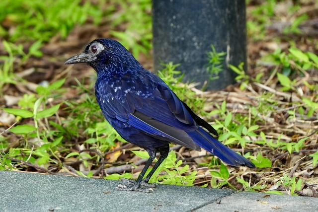

Blue Whistling-Thrush
Myophonus caeruleus
Order: Passeriformes
Family: Muscicapidae

An ultramarine blue bird with silvery dots. Not actually a thrush (Turdidae). Usually found near water. Fans tail often.
Sounds
Gives a high-pitched whistle, hence the name.